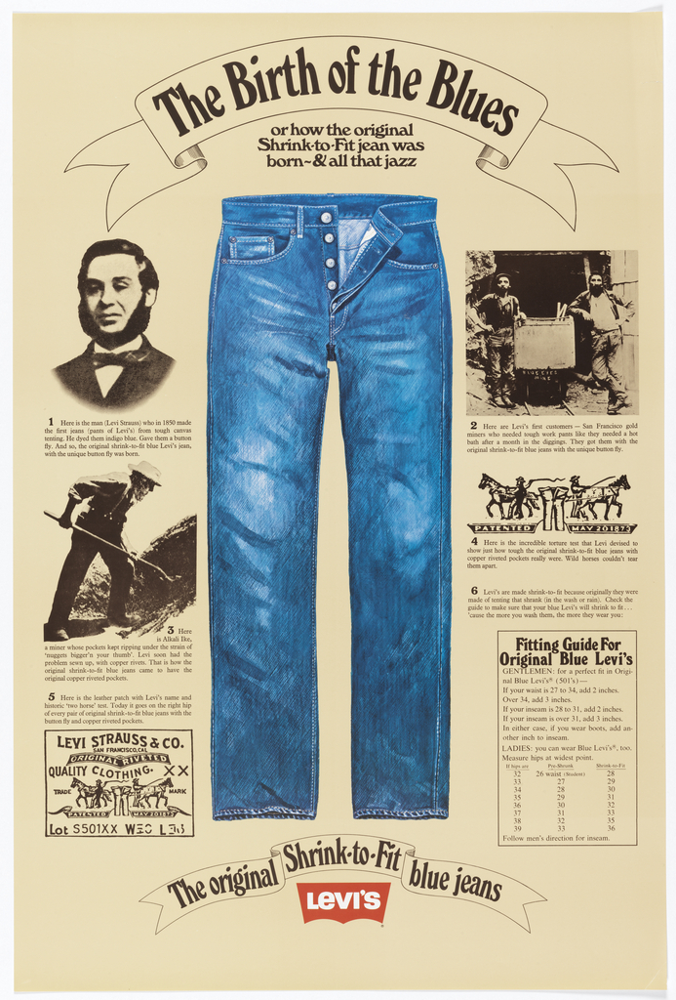

Hello Everyone!
A page about how to date Levi's jeans
Levi Strauss & Co. was founded in San Francisco in 1853 by Bavarian immigrant Levi Strauss as a dry goods business, and in 1873 he and tailor Jacob Davis patented copper-riveted work pants, which were the first blue jeans. Levi’s started out as tough workwear for miners and laborers and grew into a global symbol of American style, with the 501 becoming one of the most iconic and widely copied garments in fashion history.

There are many different ways to differentiate between an old pair of levi's from a newer pair. Here are a few of the most common and easy to spot!
Three ways to date Levi's
- The Tab: Earlier pairs of Levi's from before the 60's had the classic red "Levis" tab in full uppercase. Additionally, the color of the tab can tell you the aproximate year and subline the jeans are from.
- The Back Patch: On the cardboard patch on the back of the waistband, there have been two notable changes. In 1991 the ink color changed from red to black, and in 2003 the words "Made in USA" were removed
- Care Label: Until 1987, the care label on the inside of the jean was all black. Then, in 2003 Levi's switched to the modern multi-lingual label we know today.
Built by Zach Wilson · BMIS 235